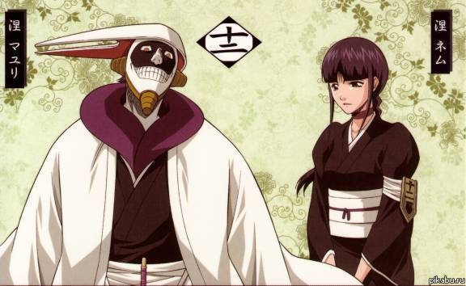

Куроцучи — самый что ни на есть стереотипный сумасшедший учёный. Поначалу он показывает себя жестоким и склонным к садизму. Он видит всех и вся только как объект для исследований — включая себя самого.Он не испытывает уважения к жизням большинства людей, однажды он даже превратил своих солдат в живые бомбы, чтобы поймать Урюу Исиду и Орихиме Иноуэ для экспериментов. Также он скрывал от остальных синигами важную информацию о связанных, чтобы иметь возможность спокойно поймать одного и изучить. Несмотря на своё пренебрежение к окружающим и, в особенности, к их жизням, он обычно предупреждает о возможных опасностях.
Любимая еда Маюри — щука; он не любит лук. В своё свободное время часто читает «Вестник Сейрейтея» от корки до корки. Сам он публикуется в журнале под заголовком «Эффективное лечение мозга», где описывает способы приготовления лекарств и рекомендации по их применению. Как это ни странно, его колонка очень популярна.
В бою Маюри любит играть с противником, мучая его до тех пор, пока тот держится на ногах. Эта сторона его характера заметна и в его сражении с Урюу, и с эспадой Заельапорро Гранцем. Каждое сражение он воспринимает как эксперимент, исследуя понемногу и оппонента, и себя самого. Также он не пренебрегает возможностью заразить противника бактериями, с помощью которых Маюри может дистанционно изучать его и то, что его окружает. Перед тем, как вступать в битву, он собирает как можно больше информации на оппонентов, которая может помочь ему в сражении. Перед сражениями со связанными и с Эспадой он был замечен в библиотеке, с табличкой «Зайдёшь — умрёшь» на двери.
Мало что известно о прежней жизни Маюри, кроме того, что 110 лет назад он был единственным заключенным в Гнезде личинок, кто был объявлен настолько опасным, что содержался в небольшой тюремной камере, прикованным к стене за лодыжку. Однажды его, однако, навестил Кисуке Урахара, который нуждался в нем в качестве заместителя директора нового НИИ синигами, предложение, которое автоматически освобождало заключенного. Поначалу Маюри отказался, но Кисуке смог уговорить его, сказав, что Маюри нечем заниматься в тюрьме, а в качестве заместителя директора он сможет унаследовать НИИ, в случае, если с Урахарой что-то случится.
9 лет спустя Маюри вместе с Урахарой Кисуке и Хиори Саругаки прогуливался по Сейрейтею, когда их поприветствовал капитан Пятого отряда Шинджи Хирако и его лейтенант Сосуке Айзен. Маюри выказал неприязнь по отношению к Шинджи, который поздоровался с ним не полным обращением, а только по имени, что, по мнению Маюри, было слишком фамильярно. Было похоже, что он не заинтересовался разговором Урахары и Айзена, который рассказывал, что Девятый отряд отправили на специальное расследование, чтобы выяснить подробности о происшествиях в Руконгае, где странным образом исчезали люди.
Маюри в Научно-исследовательском институте
Во время недолгой работы в качестве сотрудника института, Хиори работала главой лаборатории, в результате чего конфликтовала с Маюри, который был третьим офицером и заместителем директора Научно-исследовательского института синигами, и его полномочия больше соответствовали капитанским. Эти двое постоянно спорили, кто из них главнее, и однажды Хиори была вынуждена позвать Урахару. Появившись, он объяснил ей, что из-за исчезновений в Руконгае создал новый тип гигая. Прежде чем Хиори успела ему ответить, они были прерваны появлением Изаэмона Тодо, шестого офицера Девятого отряда. Урахара по просьбе капитана Кенсея Мугурумы согласился отправить ученого на место происшествия. Урахара сказал, чтобы пошла Хиори, но она начала сердиться и спросила, почему бы ему не послать кого-нибудь менее важного, например, лаборанта Акона. Тот усомнился, стоит ли Хиори вообще быть лейтенантом, после чего она попыталась напасть на него, но он с легкостью увернулся. Хоть и неохотно, но Хиори в итоге послушалась Урахару, который сказал, что он может доверить это дело только ей.
После происшествия, в результате которого Урахара и Тессай Цукабиши были изганы из Общества душ, а несколько капитанов и офицеров прошли пустофикацию, Маюри сменил Урахару на посту главы НИИ синигами, а также стал капитаном Двенадцатого отряда Готей 13.
Также в своих исследованиях он экспериментировал над квинси, в том числе над Сокеном Исидой, учителем и дедом Урюу. Он был разочарован, узнав, что Урюу является квинси, так как считал их изучение законченным и не хотел знать о других образцах.